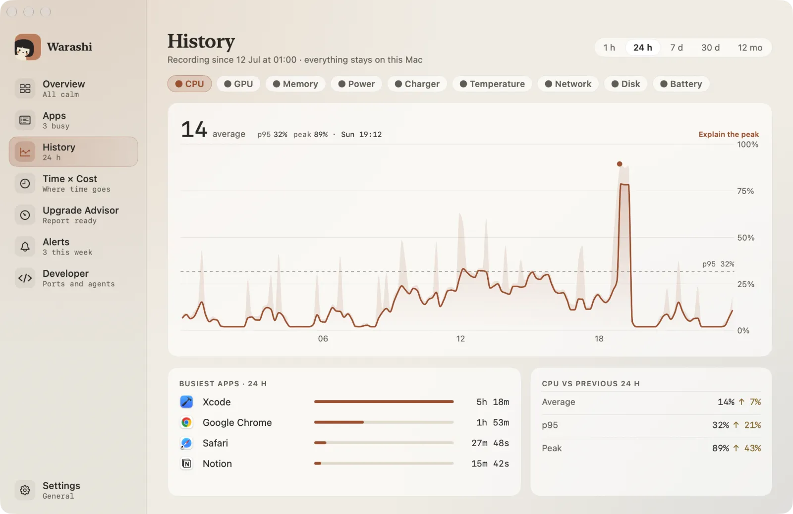
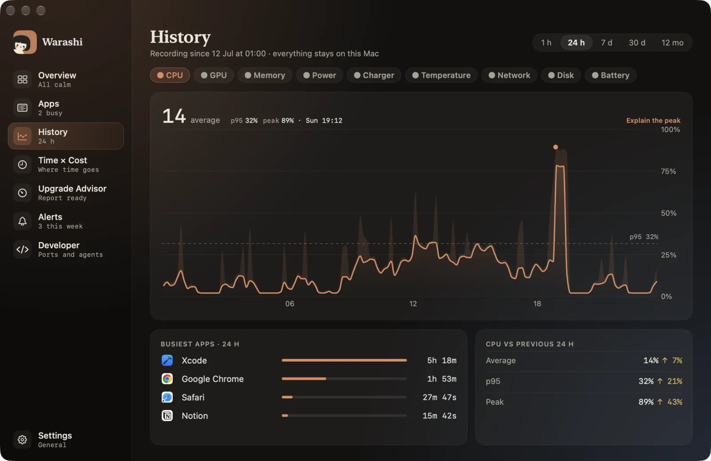
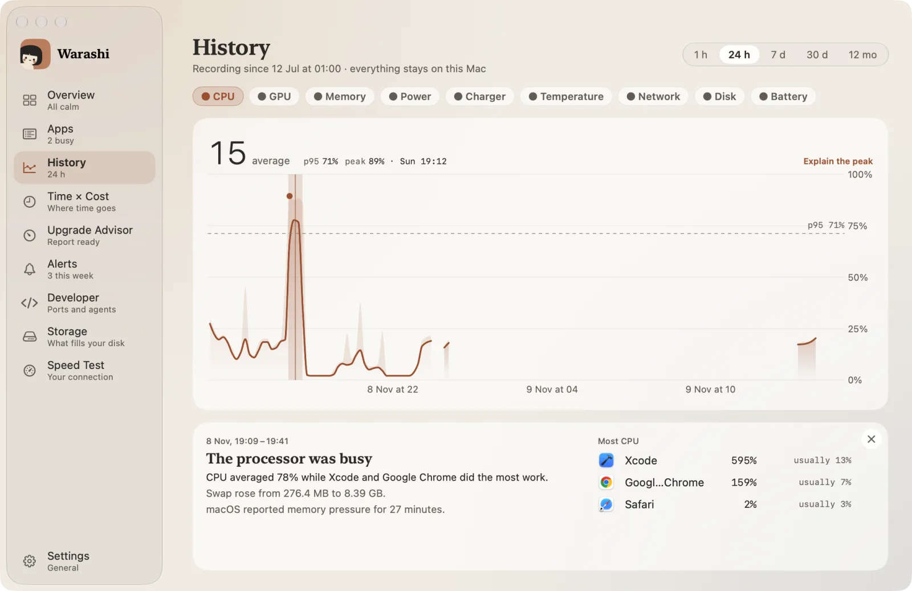
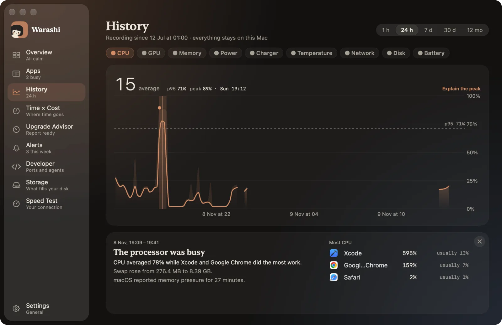
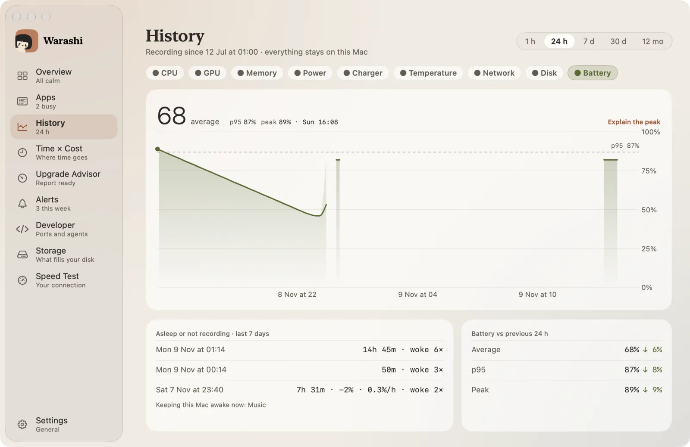
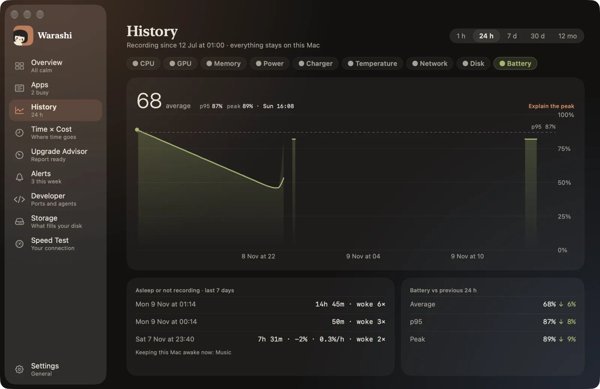

O Histórico é o que faz do Warashi uma caixa-preta: ele guarda os números do seu Mac para você poder olhar para trás e ver o que aconteceu.
- Abra o Histórico
Escolha Histórico na barra lateral ou pressione ⌘3.


- Escolha um período
No canto superior direito: 1 h, 24 h, 7 d, 30 d ou 12 m.
- Escolha uma métrica
Escolha CPU, GPU, Memória, Potência, Carregador, Temperatura, Rede, Disco ou Bateria. O número grande é a média do período, com o p95 e o pico ao lado, calculados a partir de todas as leituras.
- Percorra o gráfico
Passe o ponteiro sobre o gráfico: o título passa a mostrar o valor naquele momento, com o horário e o quanto subiu por perto. A linha é a média de cada trecho de tempo, para você enxergar a tendência; a faixa clara acima dela mostra a maior leitura daquele trecho. Os vazios são momentos em que nada foi registrado, geralmente repouso.
- Veja quem estava por trás
Abaixo do gráfico, Apps mais ativos do período e como o período se compara ao anterior.
O que aconteceu aqui?
- Clique em um momento
Clique em qualquer ponto de um gráfico, ou em Explicar o pico acima dele. O momento fica marcado no gráfico, e a explicação ocupa o lugar dos blocos abaixo.


- Leia a explicação
Um título em linguagem simples, as evidências e os apps que estavam em execução, com o que eles costumam fazer. Se nada de incomum aconteceu, ele diz isso. Os apps são os que estavam em execução na hora, o que não prova que foram eles a causa.
- Vá além
Clique em um app para abrir o painel dele. Feche a explicação com o × no canto.
Repouso e bateria
No gráfico de Bateria, um bloco lista os trechos recentes em que o Mac estava em repouso ou o Warashi não estava registrando, com a duração, quantas vezes ele despertou e a bateria perdida. Abaixo dele está o que mantém este Mac ativo agora.


Quanto é guardado
| Detalhe | Guardado por |
|---|---|
| A cada 5 segundos | 24 horas |
| A cada minuto | 30 dias |
| A cada hora | 12 meses |